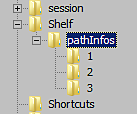
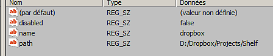
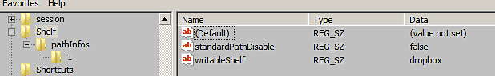

This page is a guide on how to edit the preferences to add or remove resource path without launching the application.
The resource location are managed with the application preferences which can change depending on the paltform:
| System | Version | Path |
|---|---|---|
Windows (registry) | 7.2 or newer | HKEY_CURRENT_USER\Software\Adobe\Adobe Substance 3D Painter |
| Legacy | HKEY_CURRENT_USER\Software\Allegorithmic\Substance Painter | |
Mac (library) | 7.2 or newer | /Users/[username]/Library/Preferences/com.adobe.Adobe Substance 3D Painter.plist |
| Legacy | /Users/[username]/Library/Preferences/com.substance3d.Substance Painter.plist | |
| Linux | 7.2 or newer | /home/[username]/.config/Adobe/Adobe Substance 3D Painter.conf |
| Legacy | /home/[username]/.config/Allegorithmic/Substance Painter.conf |
On Windows paths can be managed via the Windows Registry:


It is possible to define the new path as the default one (were new resources are created, like presets) by changing the value of the entry writableShelf to the name of the new location.

On Linux additional paths can be created via the user application preference config file, stored in the home directory (see.
Add a new shelf path by incrementing the last number visible, example:
pathInfos2disabled=false pathInfos2name=custom_resources pathInfos2path=/home/Username/Documents/custom_path writableShelf=custom_resources
Use the writableShelf variable to specify which path will be the default one (were new resources are created, like presets).
Save the changes and restart the application.